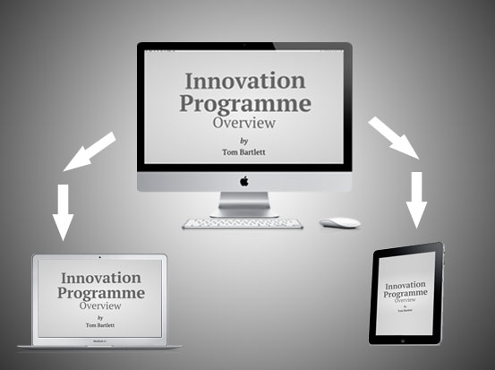

Interactive Distributed Presentation
A visually intersting presentation, which is sync'd across multiple browsers using websockets
- Try is on your mobile and your desktop
- Remote controlled via Safari on iOS (Chrome probably works)
- Node.js
- Websockets (nodejitsu hosted)
- HTML5
- CSS3 Transitions, Transforms
- Inspired by Impress.js presentations
- Source (poorly organised) on GITHub